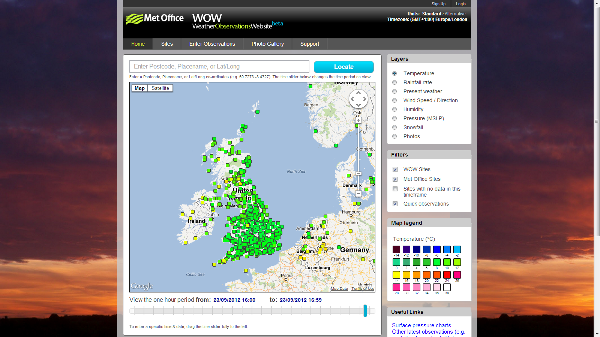
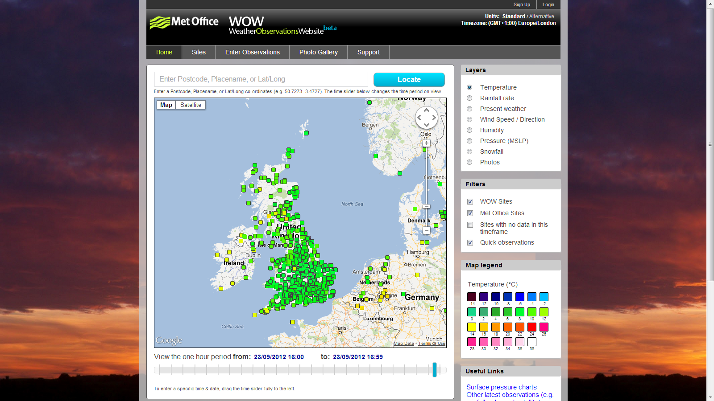

Who I am
- Mobile & Front-end Development Lead at PA Consulting Group
- Organiser of London Web Standards since 2010



As a consequence of this design, feature modules couldn't progress unless the core modules progressed, and the core modules couldn't be complete until all the feature modules were complete. Nothing could move forward until everything moved forward. It was a new kind of dependency hell.

The proposed spec is NOT about variables and I seriously wonder if we should not change the title of the document. You may call the feature it introduces "variables" but at the deeper level, that's not about variables.Daniel Glazman, CSSWG Co-Chair, August 2012
[CSS Cascading Variables is] a family of custom author-defined properties known collectively as custom properties, which allow an author to assign arbitrary values to a property with an author-chosen name, and variables, which allow an author to then use those values in other properties elsewhere in the document.
First requested in 1998, first W3C proposal: 2008, first public draft April 2012

Lines of CSS: 1493
Total File size: 31.85KB (1 file)

Lines of CSS: 2270 Up 52%
Total File size: 61.93KB (12 files)
Lines of CSS: 19712 Up 860%!
Total File size: 336.30KB (12 files)


Neither implementation matches the current W3C spec, so why does it matter?
Re-using CSS has always between projects has always been a challenge, tips and tricks from one project get lost and re-written for another. CSS pre-processors can change that
A mixin include can now accept a block of content. The style block will be passed to the mixin and can be placed at the point @content is used
You can now output values of variables into standard CSS directives such a @font-face and @media
This allows for complicated mixins in a much simpler syntax
npm install -g less
lessc style.less style.cssgem install sass
gem install compass
sass --watch style.scss:style.cssDirect port of Less to .NET
PM> Install-Package dotlessTranslator adaptor for the basic Ruby library
PM> Install-Package BundleTransformer.SassAndScssBoth allow for .less/.scss files to be read at runtime and bundled & minified for production
lessphp - a compiler for LESS written in PHP
require "lessc.inc.php";
$less = new lessc;
echo $less->compile(".block { padding: 3 + 4px }");Theme designers can write their CSS in Less or Sass and make use of in-theme bootstrappers so no plugins are required
Use WP-LESS
// wp-content/themes/your-theme/functions.php
require dirname(__FILE__) . ‘/vendor/wp-less/bootstrap-for-theme.php’;
$less = WPLessPlugin::getInstance();
$less->dispatch();Use WP-SASS
require_once( 'wp-sass/wp-sass.php' );
// enqueue a .scss style sheet
wp_enqueue_style( 'style', get_stylesheet_directory_uri() . '/style.scss' );Less is written in JavaScript, so you can run it client-side
<link rel="stylesheet/less" href="main.less" type="text/css">
<script src="less.js" type="text/javascript"></script>So while it's a little more setup to get started, we (the sass core team) think that server side compilation is the best long term approach. Similarly, the less developers prefer server side compilation for production stylesheets.
Stylus
learnboost.github.com/stylus - A third way by @tjholowaychuk
 smacss.com - A great e-book on modular CSS by Jonathan Snook
smacss.com - A great e-book on modular CSS by Jonathan Snook
{kind=link}